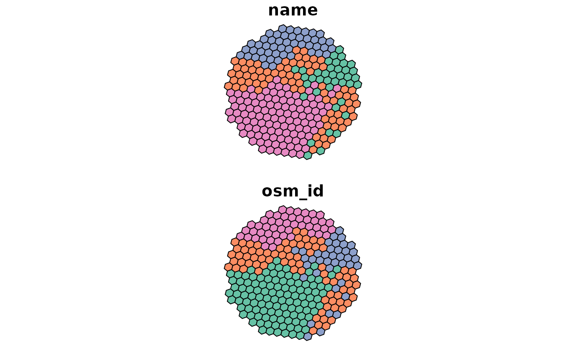

Calculate voronoi-style polygons based on grid with OSRM routing duration
Usage
iso_osrm(
x,
points,
measure = "duration",
osrm.server = getOption("osrm.server"),
osrm.profile = getOption("osrm.profile")
)
Arguments
- x
An sf object of a grid
- points
An sf object of points
- measure
passed on to osrm::osrmTable, can be either "duration" (minutes) or "distance" (meters)
- osrm.server
the base URL of the routing server (end with "/"!)
- osrm.profile
the routing profile to use
Value
An sf object of a grid, where column 'index_min' gives the index of the input point, for which the measure is minimal
Note
The function requires OSRM to be running, with the server being
defined by the setting for the osrm package,
i.e., getOption("osrm.server") and getOption("osrm.profile")
Examples
points = points_oldenburg
x = sf::st_as_sf(iso_grid(net_oldenburg_raw, resolution = 10))
grid = isonoi::iso_osrm(x, points, measure = "duration",
osrm.server = "http://router.project-osrm.org/", osrm.profile = "car")
plot(grid)
